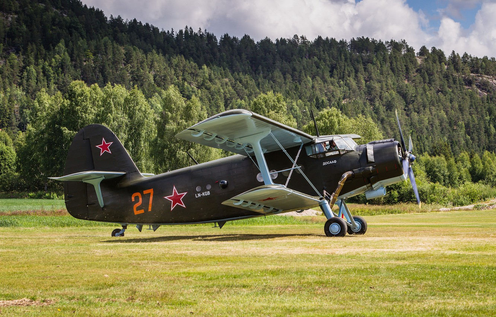

Polskie Samoloty PZL
Polskie Samoloty PZL

An-2 "Antek"
An-2 samolot wielozadaniowy zaprojektowany w biurze konstrukcyjnym Olega Antonowa. An-2 (przez polskich pilotów nazywany często Antek) jest największym produkowanym seryjnie jednosilnikowym dwupłatowcem na świecie. Przez długi czas dzierżył także tytuł najdłużej produkowanego samolotu świata (obecnie rekord ten należy do samolotu Lockheed C-130 Hercules). Ze względu na niezawodność, prostą konstrukcję i obsługę, łatwość pilotażu i konstrukcję dwupłatowca nazywany był czasem kukuruźnikiem – po słynnym samolocie Po-2 z okresu II wojny światowej. Należy jednak podkreślić, iż konstrukcyjnie An-2 jest zupełnie odmiennym samolotem niż Po-2, również w sensie wielkości samolotu, masy startowej i mocy zastosowanego silnika różnice są zasadnicze. Załogę An-2 stanowią dwie osoby.
